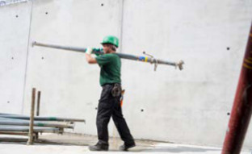
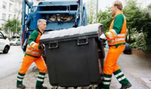
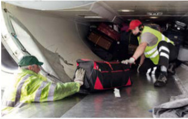
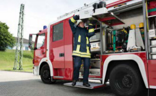
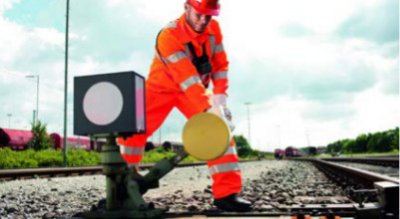
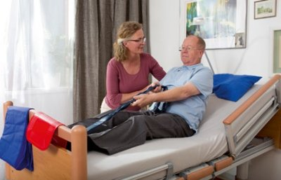
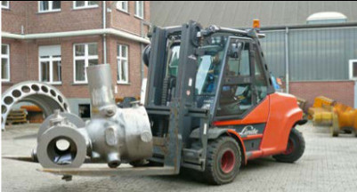
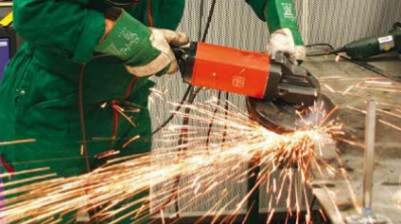

2 Welche Tätigkeiten können zu einer Gefährdung führen?2 Welche Tätigkeiten können zu einer Gefährdung führen?
2 Welche Tätigkeiten können zu einer Gefährdung führen?2 Welche Tätigkeiten können zu einer Gefährdung führen?Der Gesetzgeber hat mit dem Arbeitsschutzgesetz alle Unternehmerinnen und Unternehmer dazu verpflichtet, die Gefährdungen für ihre Beschäftigten im Betrieb zu ermitteln und zu beurteilen sowie ggfs. Maßnahmen abzuleiten und diese zeitnah umzusetzen. Dies gilt auch für Gefährdungen durch körperliche Belastungen.
Doch welche Tätigkeiten sind für Rücken und Gelenke belastend?
Tätigkeiten mit manueller Lastenhandhabung
Die manuelle Lastenhandhabung ohne technische Hilfsmittel kann – bei entsprechend hoher Belastung – zu Beschwerden und Erkrankungen des Rückens und der Gelenke führen.


Abb 1-4
Beispiele für das Heben, Halten, Tragen sowie Ziehen und Schieben von Lasten
Unter manueller Lastenhandhabung wird das
Die Lastenhandhabungsverordnung fordert im Rahmen der Gefährdungsbeurteilung, dass Arbeitsplätze besonders im Hinblick auf die manuelle Handhabung von Lasten zu beurteilen sind. Gegebenenfalls sind geeignete Maßnahmen zu treffen, die eine Gefährdung der Gesundheit möglichst gering halten, besser noch vermeiden.
Die Verordnung enthält jedoch keine konkreten Grenzwerte, wie schwer Lasten maximal sein dürfen. Grenzwerte gelten für werdende Mütter (Mutterschutzgesetz) sowie für Kinder und vollzeitschulpflichtige Jugendliche (Kinderarbeitsschutzverordnung).
Tätigkeiten mit erzwungenen Körperhaltungen (Zwangshaltungen)
Körperzwangshaltungen am Arbeitsplatz entstehen immer dort, wo die Tätigkeit, das Arbeitsmittel oder die Gestaltung des Arbeitsplatzes den Menschen dazu zwingen, Körperhaltungen mit geringen Bewegungsmöglichkeiten über eine längere Zeit hinweg einzunehmen.


Abb. 5-8
Beispiele für Arbeiten in Zwangshaltungen
Die Belastungen für Rücken und Gelenke ergeben sich dabei z. B. durch statische Haltearbeit, extreme Gelenkwinkelstellungen oder Druckeinwirkungen.
Die am häufigsten in der Arbeitswelt vorkommenden Zwangshaltungen sind:
Tätigkeiten mit erhöhten Ganzkörperkräften oder Körperfortbewegung
Die hierbei auftretenden Belastungen entstehen durch das Aufbringen erhöhter Körperkräfte oder durch die Körperfortbewegung selbst. Beide Belastungsarten kennzeichnen die Beteiligung vieler Muskelgruppen.


Abb. 9–11
Beispiele für Tätigkeiten mit Ganzkörperkräften und Körperfortbewegung
Typische Tätigkeiten für diese Belastungsformen sind:
Für das Bewegen von Menschen sind einige Besonderheiten zu berücksichtigen, die in der DGUV Information 207-022 "Bewegen von Menschen im Gesundheitsdienst und in der Wohlfahrtspflege" ausführlich erläutert werden.
Sich ständig wiederholende (repetitive) Tätigkeiten / manuelle Arbeitsprozesse
Als "repetitiv" werden Tätigkeiten bezeichnet, bei denen gleiche oder ähnliche Arbeitsabläufe wieder und wieder durchgeführt werden. Besonders häufig werden dadurch Hand-, Ellenbogen- und Schultergelenke belastet.
Die Belastung wird verstärkt durch gleichzeitige hohe Kraftanstrengungen, Einwirkung von Hand-Arm-Schwingungen und durch Arbeiten in extremen Gelenkstellungen.
Abb. 12 Beispiel für repetitives Arbeiten


Abb. 13-14 Beispiele für Einwirkungen von Ganzkörper- und Hand-Arm-Vibrationen
Repetitive Tätigkeiten können beispielsweise auftreten beim:
Tätigkeiten mit Einwirkung von Hand-Arm- oder Ganzkörpervibrationen
Tätigkeiten mit Hand-Arm-Vibrationen durch handgeführte oder handgehaltene Arbeitsmaschinen (z. B. Abbruchhämmer, Stampfer und Bohrer) oder mit Ganzkörpervibrationen (z. B. beim Fahren von Gabelstaplern, Erdbaumaschinen und Ladern) belasten ebenfalls das Muskel-Skelett-System.
In der Lärm- und Vibrations-Arbeitsschutzverordnung werden Mindestanforderungen für den Schutz der Beschäftigten vor Gefährdungen durch Lärm und Vibrationen bei der Arbeit festgelegt. Für den Bereich der Vibrationen enthält die Verordnung Auslösewerte und Expositionsgrenzwerte, bei deren Erreichen oder Überschreiten bestimmte Maßnahmen einzuleiten sind. Konkretisiert wird die Verordnung durch die Technischen Regeln zur Lärm- und Vibrations-Arbeitsschutzverordnung (TRLV). Die TRLV hilft bei der Gefährdungsbeurteilung und bei der Ableitung von Maßnahmen zur Vibrationsminderung.
|
Ab wann wird von einer Gefährdung gesprochen?
|
|
Das alleinige Vorkommen einer oder mehrerer der oben angeführten Tätigkeiten sagt noch nichts über die Höhe der körperlichen Beanspruchung und die damit verbundene Gefährdung der Beschäftigten aus. Der menschliche Körper ist von seiner Bestimmung her auch für die zeitweilige Bewegung in ungünstigen bzw. extremen Positionen geeignet. Auch das Aufbringen von Kräften innerhalb seiner Möglichkeiten wurde von der Natur für den Menschen vorgesehen. Neben dem Erkennen der belastenden Tätigkeiten ist also besonders die Höhe, die Dauer und die Häufigkeit der Belastungen zu ermitteln, um Gefährdungen für Rücken und Gelenke zu erkennen und zu beurteilen. Darüber hinaus können individuelle Leistungsvoraussetzungen wie körperliche Fitness und Erfahrung einen Einfluss auf die Beanspruchung haben und sollten dementsprechend in die Beurteilung einbezogen werden. |